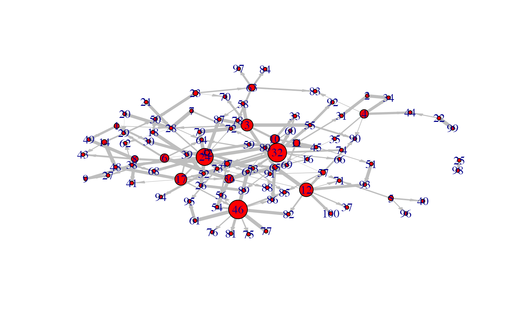

Considering the class of the argument which is passed to plot, the graphical output differs.
# S4 method for micro_array,ANY
plot(x, y, ...)
# S4 method for network,ANY
plot(
x,
y,
choice = "network",
nv = 0,
gr = NULL,
ini = NULL,
color.vertex = NULL,
video = TRUE,
weight.node = NULL,
ani = FALSE,
taille = c(2000, 1000),
label_v = 1:dim(x@network)[1],
horiz = TRUE,
legend.position = "topleft",
frame.color = "black",
label.hub = FALSE,
...
)
# S4 method for micropredict,ANY
plot(
x,
time = NULL,
label_v = NULL,
frame.color = "white",
ini = NULL,
label.hub = FALSE,
edge.arrow.size = 0.7,
edge.thickness = 1
)Arguments
- x
a micro_array object, a network object or a micropredict object
- y
optional and not used if x is an appropriate structure
- ...
additional parameters
- choice
what graphic should be plotted: either "F" (for a representation of the matrices F) or "network".
- nv
the level of cutoff. Defaut to `0`.
- gr
a vector giving the group of each gene
- ini
using the ``position'' function, you can fix the position of the nodes.
- color.vertex
a vector defining the color of the vertex.
- video
if ani is TRUE and video is TRUE, the result of the animation is saved as an animated GIF.
- weight.node
nodes weighting. Defaults to `NULL`.
- ani
animated plot?
- taille
vector giving the size of the plot. Default to `c(2000,1000)`.
- label_v
vector defining the vertex labels.
- horiz
landscape? Defaults to `TRUE`.
- legend.position
position of the legend.
- frame.color
color of the frames.
- label.hub
logical ; if TRUE only the hubs are labeled.
- time
sets the time for plot of the prediction. Defaults to `NULL`
- edge.arrow.size
size of the arrows ; default to 0.7.
- edge.thickness
edge thickness ; default to 1.
Methods
- list("signature(x = \"micro_array\", y = \"ANY\",...)")
- x
a micro_array object
- list_nv
a vector of cutoff at which the network should be shown
- list("signature(x = \"network\", y = \"ANY\",...)")
- x
a network object
- list()
Optionnal arguments:
- gr
a vector giving the group of each gene
- choice
what graphic should be plotted: either "F" (for a representation of the matrices F) or "network".
- nv
the level of cutoff. Defaut to 0.
- ini
using the ``position'' function, you can fix the position of the nodes
- color.vertex
a vector defining the color of the vertex
- ani
animated plot?
- size
vector giving the size of the plot. Default to c(2000,1000)
- video
if ani is TRUE and video is TRUE, the animation result is a GIF video
- label_v
vector defining the vertex labels
- legend.position
position of the legend
- frame.color
color of the frames
- label.hub
logical ; if TRUE only the hubs are labeled
- edge.arrow.size
size of the arrows ; default to 0.7
- edge.thickness
edge thickness ; default to 1.
- list("signature(x = \"micropredict\", y = \"ANY\",...)")
- x
a micropredict object
- list()
Optionnal arguments: see plot for network
Examples
data(Net)
plot(Net)
#> Loading required package: igraph
#>
#> Attaching package: ‘igraph’
#> The following object is masked from ‘package:Cascade’:
#>
#> compare
#> The following objects are masked from ‘package:stats’:
#>
#> decompose, spectrum
#> The following object is masked from ‘package:base’:
#>
#> union

data(M)
plot(M)


 data(Selection)
data(network)
nv<-0.11
plot(network,choice="network",gr=Selection@group,nv=nv,label_v=Selection@name,
edge.arrow.size=0.9,edge.thickness=1.5)
data(Selection)
data(network)
nv<-0.11
plot(network,choice="network",gr=Selection@group,nv=nv,label_v=Selection@name,
edge.arrow.size=0.9,edge.thickness=1.5)